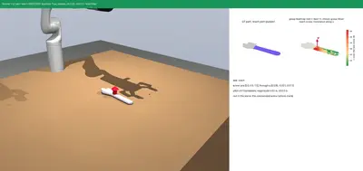
reach
“reach for the adjustable wrench”
task reach
approach, close on the object (touch), open, back off (2 cm screw, not executed)
← SALSA · Verb Map · Screw Atlas
Each of the 112 verbs in the SALSA vocabulary, with an example command, the task it runs, the screw(s) that task executes, and a simulated clip (Kinova Gen3 + Robotiq 2F-85 or Franka Panda, MuJoCo). Verbs marked new task had no task before; their tasks, fixtures and success checks are new.

“reach for the adjustable wrench”
task reach
approach, close on the object (touch), open, back off (2 cm screw, not executed)
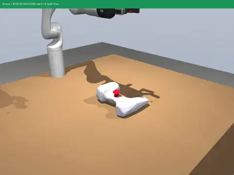
“move the power drill”
task lift
translate 15 cm up (pitch inf)
also: slide
“go to the green pad with the gelatin box”
task gonew task kinova: success panda: success
translate to the pad (pitch inf)
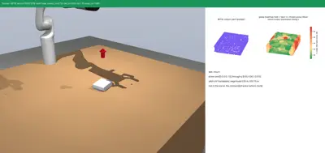
“return the gelatin box to where it was”
task returnnew task kinova: success panda: success
translate +15 cm sideways, translate back, translate down to the table
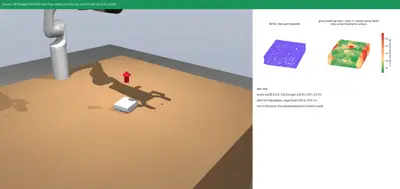
“stop and hold the gelatin box still”
task stopnew task kinova: success panda: success
zero screw (hold the pose 2 s)
“pick up the power drill”
task lift
translate 15 cm up (pitch inf)
“lift the power drill”
task lift
translate 15 cm up (pitch inf)
also: hinge
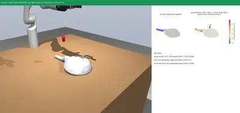
“place the pots pans over there”
task place
lift 15 cm, translate 15 cm sideways, translate down to the table, release
“put down the pots pans”
task place
lift 15 cm, translate 15 cm sideways, translate down to the table, release
also: hinge
“stack the gelatin box on the block”
task stack
lift 15 cm, translate over the block, translate down onto it, release
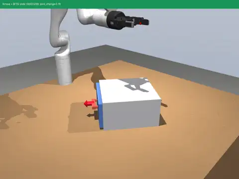
“take out the drawer”
task slide
translate 12 cm along the drawer's attachment normal, out of the body (prismatic, pitch inf)
also: lift
“grasp the power drill”
task lift
translate 15 cm up (pitch inf)
also: grasp
“grab the power drill”
task lift
translate 15 cm up (pitch inf)
also: grasp
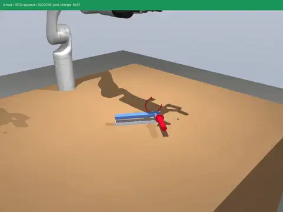
“pinch the tongs”
task squeeze
rotate 20 deg about the arms' joint axis, turning the free arm down (revolute)
“hold the gelatin box”
task stopnew task kinova: success panda: success
zero screw (hold the pose 2 s)
also: grasp
“carry the power drill”
task lift
translate 15 cm up (pitch inf)
“release the adjustable wrench”
task reach
approach, close on the object (touch), open, back off (2 cm screw, not executed)
also: squeeze
“catch the gelatin box”
task catchnew task kinova: success panda: success
zero screw (the hand waits); the object slides 20 cm into the open fingers, which close as it arrives
“drop the adjustable wrench”
task drop
lift 20 cm, open the gripper
“throw the adjustable wrench”
task throw
lift 15 cm, translate 30 cm away fast, open at 60 % of the stroke
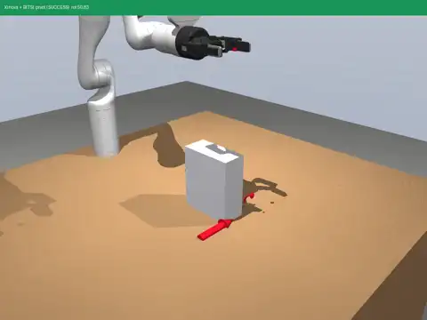
“flip the box over”
task pivot
rotate 50 deg about the box's far bottom edge (revolute, pitch 0)
also: hinge
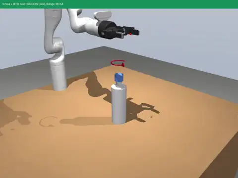
“rotate the bottle cap”
task turn
rotate 180 deg about the cap's own (spine) axis through the cap (revolute, pitch 0)
also: twist
“push the adjustable wrench”
task push
translate 15 cm along the table (not lifted)
also: press, slide, hinge
“pull the drawer”
task slide
translate 12 cm along the drawer's attachment normal, out of the body (prismatic, pitch inf)
also: hinge, push
“roll the bottle cap”
task turn
rotate 180 deg about the cap's own (spine) axis through the cap (revolute, pitch 0)
“slide the drawer”
task slide
translate 12 cm along the drawer's attachment normal, out of the body (prismatic, pitch inf)
also: press, push
“shift the adjustable wrench to the side”
task push
translate 15 cm along the table (not lifted)
also: slide
“tilt the box”
task pivot
rotate 50 deg about the box's far bottom edge (revolute, pitch 0)
also: pour, hinge
“pivot the box on its edge”
task pivot
rotate 50 deg about the box's far bottom edge (revolute, pitch 0)
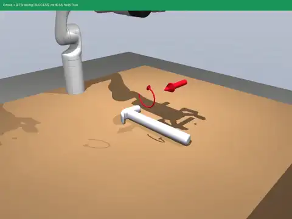
“swing the hammer”
task swing
lift 15 cm, rotate 40 deg about the axis perpendicular to the tool through its centre of percussion, head down
also: hinge
“swivel the bottle cap”
task turn
rotate 180 deg about the cap's own (spine) axis through the cap (revolute, pitch 0)
also: hinge
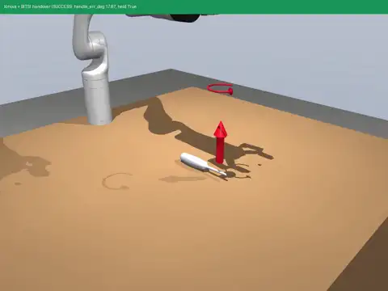
“bring me the screwdriver”
task handover
lift 15 cm, rotate about the vertical through the held end so the handle faces the person
“give me the screwdriver”
task handover
lift 15 cm, rotate about the vertical through the held end so the handle faces the person
“fetch the screwdriver”
task handover
lift 15 cm, rotate about the vertical through the held end so the handle faces the person
“get me the screwdriver”
task handover
lift 15 cm, rotate about the vertical through the held end so the handle faces the person
“touch the adjustable wrench”
task reach
approach, close on the object (touch), open, back off (2 cm screw, not executed)
“squeeze the tongs”
task squeeze
rotate 20 deg about the arms' joint axis, turning the free arm down (revolute)
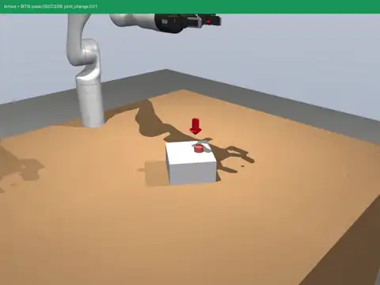
“press the button”
task press
translate 7 mm into the body along the button's normal (prismatic, push)
also: squeeze
“poke the button”
task press
translate 7 mm into the body along the button's normal (prismatic, push)
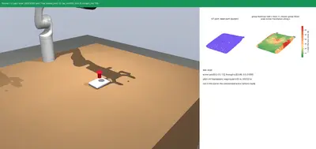
“scrub the table with the sponge”
task wipe
translate down to the table, two strokes of +-8 cm along it
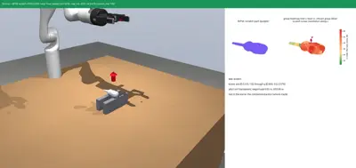
“scratch the table with the screwdriver”
task scratchnew task kinova: success panda: success
rotate 30 deg about the horizontal line through the grasp (tip down), then 4 translations +-3 cm
“brush the table with the sponge”
task wipe
translate down to the table, two strokes of +-8 cm along it
“wipe the table with the sponge”
task wipe
translate down to the table, two strokes of +-8 cm along it
“wash the table with the sponge”
task wipe
translate down to the table, two strokes of +-8 cm along it
“clean the table with the sponge”
task wipe
translate down to the table, two strokes of +-8 cm along it
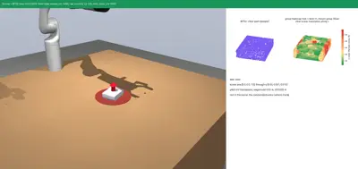
“clear the gelatin box off the red zone”
task clearnew task kinova: success panda: success
translate 18 cm away from the zone centre along the table
“pour out the measuring cup”
task pour
lift, carry the top over the bowl, rotate 100 deg about the horizontal line through the top edge
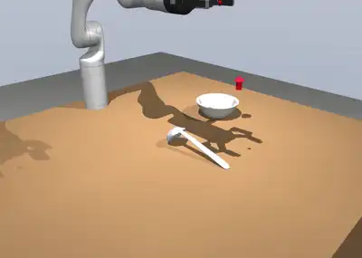
“scoop with the ladle”
task scoop
carry the head into the bowl at 45 deg, push down, curve out and up along a parabola
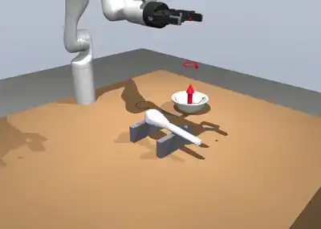
“stir the bowl with the whisk”
task stir
lift 15 cm, carry the head into the bowl, rotate 120 deg about the bowl's vertical axis
“mix the bowl with the whisk”
task stir
lift 15 cm, carry the head into the bowl, rotate 120 deg about the bowl's vertical axis
“beat the bowl with the whisk”
task stir
lift 15 cm, carry the head into the bowl, rotate 120 deg about the bowl's vertical axis
“shake the adjustable wrench”
task shake
lift 15 cm, three +-5 cm vertical translations
“jiggle the adjustable wrench”
task shake
lift 15 cm, three +-5 cm vertical translations
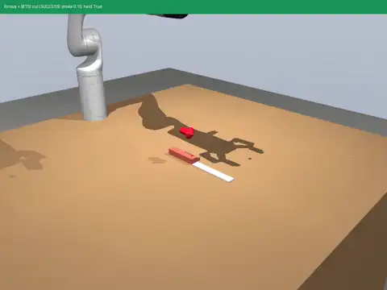
“cut with the knife”
task cut
lift 8 cm, translate 10 cm along the blade (thick -> thin end)
“chop with the knife”
task cut
lift 8 cm, translate 10 cm along the blade (thick -> thin end)
“slice with the knife”
task cut
lift 8 cm, translate 10 cm along the blade (thick -> thin end)
“carve with the knife”
task cut
lift 8 cm, translate 10 cm along the blade (thick -> thin end)
“shear with the knife”
task cut
lift 8 cm, translate 10 cm along the blade (thick -> thin end)
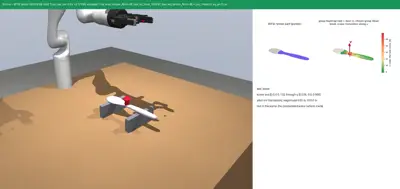
“break the wooden spoon”
task breaknew task kinova: success panda: failed
rotate 40 deg about the horizontal line through the clamped end (the clamp snaps at 4 N m)
“crack open the bottle cap”
task turn
rotate 180 deg about the cap's own (spine) axis through the cap (revolute, pitch 0)
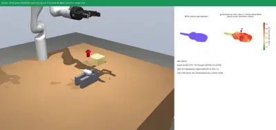
“pierce the foam with the screwdriver”
task piercenew task kinova: success panda: failed
rotate 90 deg tip down, translate 6 cm along the tool axis into the target
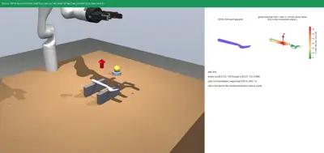
“fork the ball with the fork”
task forknew task kinova: success panda: failed
rotate 90 deg tip down, translate down into the food, translate 10 cm up
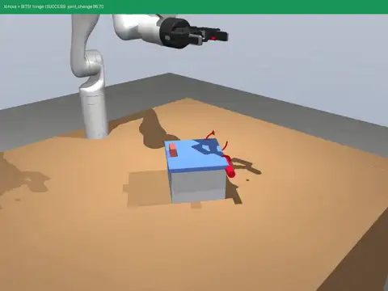
“load the box lid”
task hinge
rotate 70 deg about the hinge line at the lid's far top edge (revolute, pitch 0)
“unload the box lid”
task hinge
rotate 70 deg about the hinge line at the lid's far top edge (revolute, pitch 0)
“open the box lid”
task hinge
rotate 70 deg about the hinge line at the lid's far top edge (revolute, pitch 0)
also: turn, slide, squeeze, lift
“close the box lid”
task hinge
rotate 70 deg about the hinge line at the lid's far top edge (revolute, pitch 0)
also: turn, slide, squeeze
“seal the bottle cap”
task turn
rotate 180 deg about the cap's own (spine) axis through the cap (revolute, pitch 0)
“unseal the bottle cap”
task turn
rotate 180 deg about the cap's own (spine) axis through the cap (revolute, pitch 0)
“cover the box lid”
task hinge
rotate 70 deg about the hinge line at the lid's far top edge (revolute, pitch 0)
also: slide
“uncover the box lid”
task hinge
rotate 70 deg about the hinge line at the lid's far top edge (revolute, pitch 0)
also: slide, lift
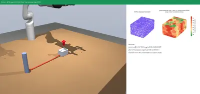
“wrap the cable around the post”
task wrapnew task kinova: success panda: failed
the object travels a helix about the post's vertical axis: 720 deg, 3 cm rise per turn, radius 20 -> 6 cm (hand orientation fixed)
“unwrap the cable from the post”
task unwrapnew task kinova: success panda: failed
the wrap helix, then its reverse (-720 deg)
“lock the bottle cap”
task turn
rotate 180 deg about the cap's own (spine) axis through the cap (revolute, pitch 0)
“unlock the bottle cap”
task turn
rotate 180 deg about the cap's own (spine) axis through the cap (revolute, pitch 0)
“turn on the button”
task press
translate 7 mm into the body along the button's normal (prismatic, push)
also: turn
“turn off the button”
task press
translate 7 mm into the body along the button's normal (prismatic, push)
also: turn
“switch the places of the gelatin box and the blue block”
task switchnew task kinova: success panda: success
A: translate aside; B: translate to A's spot; A: translate to B's spot (three place screws)
“switch on the button”
task press
translate 7 mm into the body along the button's normal (prismatic, push)
also: turn
“switch off the button”
task press
translate 7 mm into the body along the button's normal (prismatic, push)
also: turn
“insert the foam brick into the slot”
task insert
lift, translate over the slot, translate 7 cm down into it
“plug in the foam brick”
task insert
lift, translate over the slot, translate 7 cm down into it
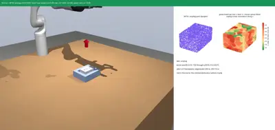
“unplug the foam brick”
task unplugnew task kinova: success panda: failed
translate up 15 cm along the slot axis
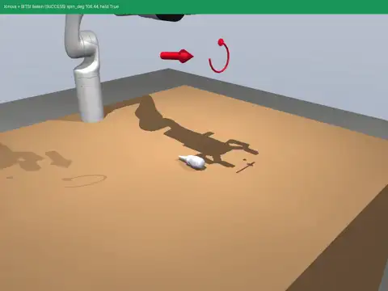
“screw in with the screwdriver”
task fasten
lift 30 cm, helix -90 deg about the screwdriver shaft
also: turn, twist
“unscrew with the screwdriver”
task fasten
lift 30 cm, helix -90 deg about the screwdriver shaft
also: turn, twist
“loosen the screw with the screwdriver”
task fasten
lift 30 cm, helix -90 deg about the screwdriver shaft
also: turn, twist, squeeze
“tighten the screw with the screwdriver”
task fasten
lift 30 cm, helix -90 deg about the screwdriver shaft
also: turn, twist, squeeze
“fasten the screw with the screwdriver”
task fasten
lift 30 cm, helix -90 deg about the screwdriver shaft
also: turn, twist
“unfasten the screw with the screwdriver”
task fasten
lift 30 cm, helix -90 deg about the screwdriver shaft
also: turn, twist
“hammer with the hammer”
task swing
lift 15 cm, rotate 40 deg about the axis perpendicular to the tool through its centre of percussion, head down
“drive the nail in with the hammer”
task swing
lift 15 cm, rotate 40 deg about the axis perpendicular to the tool through its centre of percussion, head down
“hit it with the hammer”
task swing
lift 15 cm, rotate 40 deg about the axis perpendicular to the tool through its centre of percussion, head down
also: press
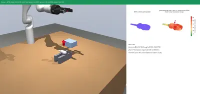
“chisel the block with the screwdriver”
task chiselnew task kinova: success panda: success
rotate 30 deg tip down, translate down to the block, translate 6 cm along it
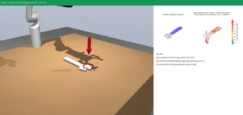
“twist the adjustable wrench”
task twist
lift 10 cm, helix 90 deg about the vertical through the wrench's jaw end
also: turn, fasten
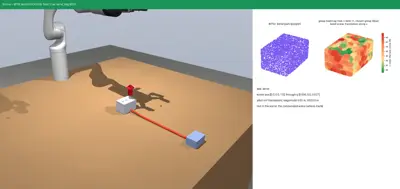
“bend the cable”
task bendnew task kinova: success panda: success
rotate 90 deg about the vertical line through the clamped end while the ends close 40 % (a spiral; pitch 0)
“wrench the nut with the adjustable wrench”
task twist
lift 10 cm, helix 90 deg about the vertical through the wrench's jaw end
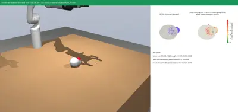
“pluck the pear”
task plucknew task kinova: success panda: success
translate up (the stem snaps at 8 N)
“join the gelatin box to the block”
task joinnew task kinova: success panda: success
translate until the object's face meets the block's side face
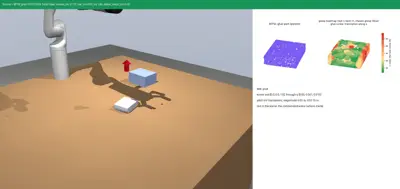
“glue the gelatin box onto the block”
task gluenew task kinova: success panda: success
translate onto the block, translate 5 mm down (press), release
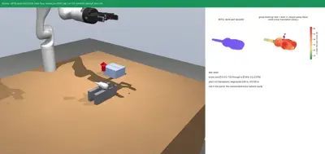
“weld the seam with the screwdriver”
task weldnew task kinova: success panda: success
translate along the seam line (10 cm) at fixed standoff
“drill into the foam with the screwdriver”
task drillnew task kinova: success panda: success
rotate 90 deg tip down, helix about the tool axis: 180 deg with 3 cm feed (pitch 6 cm/rev... 1.9 cm/rad)
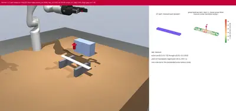
“measure the box with the ruler”
task measure this clip: failed
turn the ruler parallel to the box edge (rotate about vertical), lay it 1 cm from the edge, release
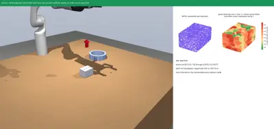
“assemble the foam brick into the socket”
task assemblenew task kinova: success panda: success
translate over the slot, translate 7 cm down, rotate 90 deg about the slot's vertical axis
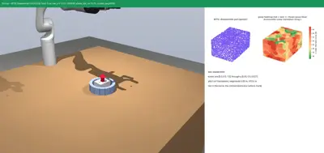
“take the foam brick out of the socket”
task disassemblenew task kinova: success panda: success
rotate -90 deg about the slot's vertical axis, translate 15 cm up
“fold the box lid”
task hinge
rotate 70 deg about the hinge line at the lid's far top edge (revolute, pitch 0)
“unfold the box lid”
task hinge
rotate 70 deg about the hinge line at the lid's far top edge (revolute, pitch 0)
“tap it with the hammer”
task swing
lift 15 cm, rotate 40 deg about the axis perpendicular to the tool through its centre of percussion, head down
also: press
“knock with the hammer”
task swing
lift 15 cm, rotate 40 deg about the axis perpendicular to the tool through its centre of percussion, head down
“strike with the hammer”
task swing
lift 15 cm, rotate 40 deg about the axis perpendicular to the tool through its centre of percussion, head down
“carry the gelatin box around the post”
task surroundnew task kinova: success panda: failed
rotate 360 deg about the post's vertical axis (pitch 0)
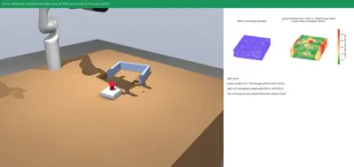
“corral the gelatin box into the pen”
task corralnew task kinova: success panda: failed
translate along the table into the pen
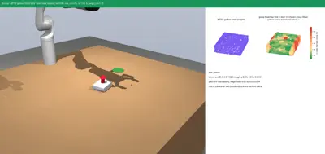
“gather the gelatin box to the pad”
task gathernew task kinova: success panda: success
translate along the table to the target point
“dump the measuring cup”
task pour
lift, carry the top over the bowl, rotate 100 deg about the horizontal line through the top edge
Physics notes for the new tasks: pierce / drill targets are contact-free volumes (depth is measured, not cut); fork attaches the food with a point constraint once the tines are 1 cm inside; pluck and break are welds that switch off above 8 N / 30 N; wrap, unwrap and bend use MuJoCo's cable model; catch is a sliding catch (the object arrives along the table at about 2 m/s). Verbs that share a task show that task's clip on a representative object.